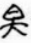

明楊愼撰。愼有檀弓叢訓。已著錄。是編第一卷爲石鼓古文。第二卷爲音釋。第三卷爲今文。附錄則自唐韋應物至明李東陽所作石鼓詩。凡五篇。前有正德辛巳愼自序。稱東陽嘗語愼及見東坡之本。篆籀特全。將爲手書上石。未竟而卒。愼因以東陽舊本。錄而藏之。金石古文。亦言升菴得唐人拓本。凡七百二字。乃其全文。馮惟訥詩紀。亦據以載入古逸詩中。當時蓋頗有信之者。後陸深作金臺紀聞。始疑其以補綴爲奇。至朱彝尊日下舊聞。考證古本。以六轡下沃若二字。靈雨上我來自東四字。皆愼所強增。第六鼓第七鼓多所附益。咸與小雅同文。又鼓有文。郭氏云恐是㚖字。白澤也。愼遂以惡獸白澤入正文中。尤爲欺人明證。且東陽石鼓歌云。拾殘補闕能幾何。若本有七百餘字。東陽不應爲是言云云。其辨託名東陽之僞。更無疑義。今考蘇軾石鼓歌。自註稱可辨者僅維鱮貫柳數句。則稱全本出於軾者妄。又韓愈石鼓歌。有年深闕畫之語。則稱全本出唐人者亦妄。卽眞出東陽之家。亦不足據。況東陽亦僞託歟。